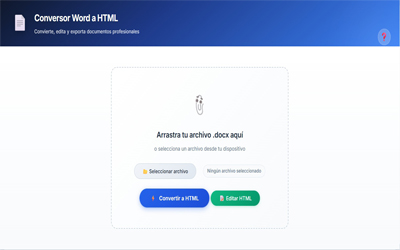

1. Introducción
El Conversor Word a HTML Profesional es una herramienta web que permite convertir documentos .docx (Microsoft Word) a formato HTML, editarlos visualmente y exportarlos como páginas web independientes. Está especialmente diseñado para:
- Artículos científicos y académicos
- Documentos con formato complejo (tablas, imágenes, referencias)
- Publicaciones web que requieren una estructura profesional
La herramienta funciona completamente en el navegador, sin necesidad de instalar software adicional.

Captura 1: Pantalla principal con área de carga de archivos
2. Conversión de Word a HTML
Para convertir un documento Word a HTML, sigue estos pasos:
- Haz clic en el botón "📂 Seleccionar archivo" o arrastra un archivo .docx al área de carga.
- Verifica que el nombre del archivo aparezca en el campo.
- Haz clic en el botón "⚡ Convertir a HTML".
- Espera unos segundos mientras el documento se procesa.
- El documento convertido aparecerá en la vista previa.
📂 Área de carga de archivos
Captura 2: Área de carga y botón "Convertir a HTML"
💡 Nota: El conversor preserva el formato original del documento: negritas, cursivas, tablas, imágenes, listas, etc. También detecta automáticamente autores, afiliaciones, resúmenes y referencias.
📄 Vista previa del documento convertido
Captura 3: Documento Word convertido mostrándose en la vista previa
3. Edición de documentos
Una vez convertido o cargado un documento, puedes editarlo visualmente:
- Haz clic en "✏️ Editar documento" para activar el modo edición.
- El editor se volverá azul y aparecerá una barra de herramientas en la parte superior.
- Selecciona cualquier texto para modificarlo.
- Cuando termines, haz clic en "💾 Guardar cambios" para salir del modo edición.
✏️ Botón "Editar documento"
Captura 4: Botón "✏️ Editar documento" en el área de acciones
Nota: Mientras editas, el área de carga se oculta para darte más espacio de trabajo.
🛠️ Modo edición activado
Captura 5: Modo edición activado con la barra de herramientas visible
5. Listas
En el grupo "Listas" (pestaña Formato) encontrarás:
- • (Viñetas) - Crea listas con puntos.
- 1. (Numeradas) - Crea listas numeradas (1,2,3...).
- a. (Letras) - Listas con letras (a,b,c...).
- I. (Romanos) - Listas con números romanos (I,II,III...).
- ← (Disminuir sangría) - Reduce la sangría del párrafo.
- → (Aumentar sangría) - Aumenta la sangría del párrafo.
📋 Grupo "Listas"
Captura 12: Grupo "Listas" en la barra de herramientas
💡 Consejo: Las listas con letras y números romanos son ideales para documentos académicos y esquemas jerárquicos.
6. Tablas
Las tablas son una de las características más potentes del editor:
📊 Insertar tabla
- Haz clic en "📊 Tabla" en la pestaña Insertar.
- Elige el número de filas y columnas.
- La tabla se insertará en la posición del cursor.
📊 Insertar tabla
Captura 13: Botón "📊 Tabla" y selector de filas y columnas
🔗 Combinar celdas
- Mantén presionada la tecla Ctrl y haz clic en varias celdas.
- Las celdas se resaltarán en azul.
- Haz clic en "🔗 Combinar selección".
🔗 Combinar celdas
Captura 14: Celdas seleccionadas y botón "🔗 Combinar selección"
❌ Eliminar celdas, filas o columnas
- Selecciona una celda (clic normal).
- Haz clic en "❌ Celda", "📄 Fila" o "📊 Columna".
❌ Botones de eliminación
Captura 15: Botones para eliminar celda, fila o columna
⚠️ Importante: Para que el redimensionamiento funcione, asegúrate de que la tabla esté en modo edición.
7. Inserción de elementos
En la pestaña "Insertar" encontrarás varias opciones:
➕ Pestaña "Insertar"
Captura 16: Pestaña "Insertar" de la barra de herramientas
🖼️ Imagen
- Haz clic en "🖼️ Imagen".
- Selecciona un archivo de imagen desde tu computadora.
- La imagen se insertará en la posición del cursor.
- Puedes redimensionarla arrastrando los puntos azules.
🖼️ Imagen insertada con puntos de redimensionamiento
Captura 17: Imagen insertada con puntos de redimensionamiento visibles
🏷️ Icono
- Similar a insertar imagen, pero con tamaño fijo (32x32px) y en línea con el texto.
- Ideal para insertar iconos como ORCID, DOI, etc.
🏷️ Icono insertado en línea
Captura 18: Icono insertado en línea con el texto (ej. ORCID)
🏷️ Logo
- Inserta un logotipo (imagen) que puedes redimensionar y ajustar opacidad.
- Los controles de tamaño y opacidad aparecen al lado.
🏷️ Logo con controles de opacidad
Captura 19: Logo insertado con controles de tamaño y opacidad
📏 Línea decorativa
- Haz clic en "📏 Línea".
- Elige color, grosor, estilo (sólida, discontinua, punteada, doble, grabada, relieve).
- También puedes ajustar ancho (%) y margen vertical.
- Para eliminar una línea, selecciónala y usa "❌ Eliminar línea".
📏 Panel de línea decorativa
Captura 20: Panel de personalización de línea decorativa
🔗 Enlace
- Selecciona un texto y haz clic en "🔗 Enlace".
- Ingresa la URL y se convertirá en hipervínculo.
🔗 Cuadro de diálogo para enlace
Captura 21: Cuadro de diálogo para insertar enlace
8. Páginas y saltos
El editor organiza el contenido en páginas independientes:
📄 Insertar salto de página
- Coloca el cursor donde quieras dividir la página.
- Haz clic en "📄 Salto" (pestaña Insertar).
- El contenido se dividirá en dos páginas separadas.
📄 Botón "Salto" y páginas divididas
Captura 22: Botón "📄 Salto" y documento dividido en páginas
📄 Añadir pie de página
- Coloca el cursor dentro de una página.
- Haz clic en "📄 Pie" (pestaña Insertar).
- Se añadirá un área editable al final de la página para contenido adicional.
📄 Pie de página añadido
Captura 23: Pie de página añadido al final de la página
📌 Nota: Al exportar, la primera página mostrará el encabezado con el título del documento y la última página mostrará el pie de página predeterminado.
9. Referencias bibliográficas
En la pestaña "Referencias" encontrarás herramientas para formatear citas:
📚 Pestaña "Referencias"
Captura 24: Pestaña "Referencias" de la barra de herramientas
📑 Sangría francesa
Aplica sangría a todas las líneas excepto la primera (formato común en bibliografías).
📝 Sangría normal
Aplica sangría solo a la primera línea de cada párrafo.
🔢 Numerar referencias
Agrega números correlativos al inicio de cada referencia (1., 2., 3...).
📖 Estilo APA
Formatea las referencias según el estándar APA (Times New Roman 12pt, interlineado doble, sangría francesa).
📖 Referencias en estilo APA
Captura 25: Referencias bibliográficas formateadas en estilo APA
↩️ Deshacer sangría
Reverte la última sangría aplicada a un párrafo.
💡 Consejo: Selecciona primero los párrafos que deseas formatear (o deja el cursor en uno) y luego aplica la acción.
10. Cargar HTML existente
Puedes cargar documentos HTML previamente exportados para seguir editándolos:
- Haz clic en "📝 Editar HTML" (área de carga).
- Selecciona un archivo .html.
- El documento se cargará automáticamente en el editor.
- Se activará el modo edición para que puedas modificarlo.
📝 Botón "Editar HTML"
Captura 26: Botón "📝 Editar HTML" en el área de carga
Esto es útil para corregir documentos sin tener que convertir desde Word nuevamente.
11. Exportar documento
Una vez que hayas terminado de editar tu documento:
- Haz clic en "⬇️ Descargar HTML" (área de acciones).
- Si estás en modo edición, se te preguntará si quieres guardar los cambios.
- El archivo HTML se descargará con el nombre que hayas especificado en el campo "Nombre del archivo".
- Abre el archivo en cualquier navegador para ver el resultado.
⬇️ Botón "Descargar HTML"
Captura 27: Botón "⬇️ Descargar HTML" y campo de nombre de archivo
📁 Ubicación: El archivo se guarda en la carpeta de descargas de tu computadora.
🌐 HTML exportado abierto en navegador
Captura 28: Archivo HTML exportado abierto en el navegador
12. Atajos de teclado
Para agilizar la edición, puedes usar los siguientes atajos (estando en modo edición):
| Atajo |
Acción |
| Ctrl + B |
Negrita |
| Ctrl + I |
Cursiva |
| Ctrl + U |
Subrayado |
| Ctrl + Z |
Deshacer última acción |
| Ctrl + Y |
Rehacer acción |
| Ctrl + K |
Insertar enlace |
Nota: Para listas y otros formatos, usa los botones de la barra de herramientas.
13. Solución de problemas
❌ Las imágenes no aparecen en el HTML convertido
Asegúrate de que el documento Word contenga imágenes insertadas normalmente (no enlazadas desde internet). Si el problema persiste, usa el botón "🖼️ Imagen" para insertarlas manualmente.
🖼️ Inserción manual de imagen
Captura 29: Inserción manual de imagen como solución
❌ La tabla se inserta al final del documento
Coloca el cursor exactamente donde quieras la tabla antes de hacer clic en "Insertar tabla". Si el cursor está al inicio o final, la tabla se añadirá allí.
❌ No se puede deshacer la sangría
La herramienta guarda un historial de la última sangría aplicada. Si no funciona, asegúrate de que la sangría se aplicó correctamente primero.
❌ El HTML exportado no tiene los mismos espacios que en la vista previa
La herramienta usa exactamente los mismos estilos CSS en la exportación que en la vista previa. Si notas diferencias, verifica que no haya estilos adicionales en el documento original.
❌ Error al cargar un archivo .docx
Comprueba que el archivo no esté dañado y que tenga la extensión correcta. Prueba a guardar el documento Word como .docx de nuevo.
❌ El botón de edición no funciona
Asegúrate de que primero hayas convertido o cargado un documento. El modo edición solo está disponible después de tener contenido en la vista previa.
Para más información o reportar errores, contacta con el desarrollador.
© 2025 - Conversor Word a HTML Profesional